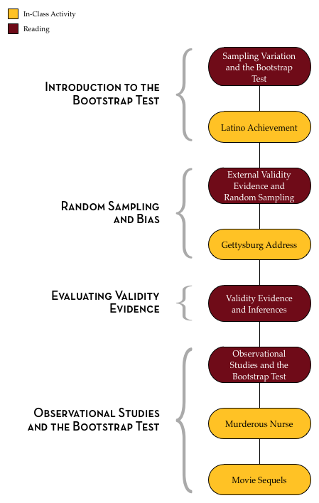

Sampling Variation and the Bootstrap Test
In Unit 3, we discovered that, even under the null hypothesis of no group differences, group means from randomized studies vary because of experimental variation. That is, variation in the result occurs because of random assignment. Recall in Unit 2, that the chance variation was a function of the sampling process; different samples drawn from the population (model) produced different results. When results vary because of the sampling process, the chance variation is referred to as sampling variation.
Sampling Variation
Some designs for group comparisons also are affected by sampling variation. For example, a study design that employs random sampling to obtain observations would inherently be affected by sampling variation. Consider the following study that examined whether baby names are getting shorter over time.
The Social Security Administration (SSA) provides historical data on names for every baby born in the United States. Researchers used the population of all names that were included at least five times in the SSA database to randomly sample 25 names from babies born in 1945 and 25 names from babies born in 1995. The length (in letters) of each name was computed, and the two samples were compared.

The plot above shows the distribution of name length for the two samples. Babies born in 1995 have shorter names, on average, than babies born in 1945. Is this difference in means is 0.72. Is this difference evidence that baby names are getting shorter over time?
In order to answer that question, we need to understand how much variation we expect in differences of means just because of chance. Here, chance is a function of the process of random sampling; note there is no random assignment to groups (year) in these data. Similar to the randomization test, we need to specify a “no difference” model and then simulate from it. But, in the simulation, we need to model the random sampling that was used to generate the data, not randomization to groups.
Bootstrapping
If we had the larger population of all baby names from 1945 and 1995, we could combine them all and draw two random samples of size 25 from this mega-population; one sample we label “1945”, and the other we label “1995”. (We combine the two populations because the hypothesized model of “no differences” implies that there is really only one population; no difference between the two populations). We could do this many times, each time collecting the difference in mean name lengths between the two samples. By plotting the difference in means, and computing the standard deviation of these differences, we could quantify the amount of variation we expect just because of sampling variation.
Unfortunately, we do not have the population of baby names from 1945 and 1995. What we do have is a random sample of those names. So, we are going to combine the names from our two samples to form a “mega-population”. Then, we are going to draw two random samples of size 25 from this “mega-population”.
Wait a minute. When we combined our two samples together, our “mega-population” was only 50 names big. If we draw two samples, each of size 25, from this “mega-population”, isn’t that all of the “mega-population”? If we do that, isn’t that the same thing as the randomization test? How does that allow us to model sampling error? After all, the randomization test helps model experimental error.
All true. We can, however, model sampling error, with one twist. When we draw our 25 names for each sample from our “mega-population”, we sample WITH REPLACEMENT. In this way, we mimic drawing random samples from a larger population without actually needing the larger population. It is a really nifty method called bootstrapping developed by Brad Efron in the late 1970’s. Efron’s big discovery was that by bootstrapping (sampling with replacement) from a random sample, a person could come up with a good estimate of the sampling variation.
Outline and Goals of Unit 4
The following schematic outlines the course readings, in-class activities, and assignments for Unit 4.

In the readings, course activities, and assignments in Unit 4, you will explore the process of modeling sampling variation to be able to evaluate observed differences between groups. You will learn about the bootstrap test (a Monte Carlo method for evaluating whether an observed result in compatible with sampling variation from a hypothesized model) and how to carry out this test using TinkerPlots™. You will also learn why random sampling helps provide validity evidence for generalizing results to the population (external validity evidence). Lastly, you will learn how to evaluate group differences from observational studies.